import numpy as np
import pandas as pd
# Import machine learning methods
from sklearn.tree import DecisionTreeClassifier, plot_tree
from sklearn.model_selection import train_test_split
import matplotlib.pyplot as plt
%matplotlib inline
import plotly.express as px
from sklearn.metrics import auc, roc_curve, RocCurveDisplay, f1_score, precision_score, \
recall_score, confusion_matrix, ConfusionMatrixDisplay, \
classification_report, precision_recall_fscore_support4 Decision Trees for Classification (Titanic Dataset)
np.random.seed(42)download_required = True
if download_required:
# Download processed data:
address = 'https://raw.githubusercontent.com/MichaelAllen1966/' + \
'1804_python_healthcare/master/titanic/data/processed_data.csv'
data = pd.read_csv(address)
# Create a data subfolder if one does not already exist
import os
data_directory ='../datasets/'
if not os.path.exists(data_directory):
os.makedirs(data_directory)
# Save data
data.to_csv(data_directory + 'processed_titanic_data.csv', index=False)data = pd.read_csv('../datasets/processed_titanic_data.csv')
# Make all data 'float' type
data = data.astype(float)data.head(10)| PassengerId | Survived | Pclass | Age | SibSp | Parch | Fare | AgeImputed | EmbarkedImputed | CabinLetterImputed | ... | Embarked_missing | CabinLetter_A | CabinLetter_B | CabinLetter_C | CabinLetter_D | CabinLetter_E | CabinLetter_F | CabinLetter_G | CabinLetter_T | CabinLetter_missing | |
|---|---|---|---|---|---|---|---|---|---|---|---|---|---|---|---|---|---|---|---|---|---|
| 0 | 1.0 | 0.0 | 3.0 | 22.0 | 1.0 | 0.0 | 7.2500 | 0.0 | 0.0 | 1.0 | ... | 0.0 | 0.0 | 0.0 | 0.0 | 0.0 | 0.0 | 0.0 | 0.0 | 0.0 | 1.0 |
| 1 | 2.0 | 1.0 | 1.0 | 38.0 | 1.0 | 0.0 | 71.2833 | 0.0 | 0.0 | 0.0 | ... | 0.0 | 0.0 | 0.0 | 1.0 | 0.0 | 0.0 | 0.0 | 0.0 | 0.0 | 0.0 |
| 2 | 3.0 | 1.0 | 3.0 | 26.0 | 0.0 | 0.0 | 7.9250 | 0.0 | 0.0 | 1.0 | ... | 0.0 | 0.0 | 0.0 | 0.0 | 0.0 | 0.0 | 0.0 | 0.0 | 0.0 | 1.0 |
| 3 | 4.0 | 1.0 | 1.0 | 35.0 | 1.0 | 0.0 | 53.1000 | 0.0 | 0.0 | 0.0 | ... | 0.0 | 0.0 | 0.0 | 1.0 | 0.0 | 0.0 | 0.0 | 0.0 | 0.0 | 0.0 |
| 4 | 5.0 | 0.0 | 3.0 | 35.0 | 0.0 | 0.0 | 8.0500 | 0.0 | 0.0 | 1.0 | ... | 0.0 | 0.0 | 0.0 | 0.0 | 0.0 | 0.0 | 0.0 | 0.0 | 0.0 | 1.0 |
| 5 | 6.0 | 0.0 | 3.0 | 28.0 | 0.0 | 0.0 | 8.4583 | 1.0 | 0.0 | 1.0 | ... | 0.0 | 0.0 | 0.0 | 0.0 | 0.0 | 0.0 | 0.0 | 0.0 | 0.0 | 1.0 |
| 6 | 7.0 | 0.0 | 1.0 | 54.0 | 0.0 | 0.0 | 51.8625 | 0.0 | 0.0 | 0.0 | ... | 0.0 | 0.0 | 0.0 | 0.0 | 0.0 | 1.0 | 0.0 | 0.0 | 0.0 | 0.0 |
| 7 | 8.0 | 0.0 | 3.0 | 2.0 | 3.0 | 1.0 | 21.0750 | 0.0 | 0.0 | 1.0 | ... | 0.0 | 0.0 | 0.0 | 0.0 | 0.0 | 0.0 | 0.0 | 0.0 | 0.0 | 1.0 |
| 8 | 9.0 | 1.0 | 3.0 | 27.0 | 0.0 | 2.0 | 11.1333 | 0.0 | 0.0 | 1.0 | ... | 0.0 | 0.0 | 0.0 | 0.0 | 0.0 | 0.0 | 0.0 | 0.0 | 0.0 | 1.0 |
| 9 | 10.0 | 1.0 | 2.0 | 14.0 | 1.0 | 0.0 | 30.0708 | 0.0 | 0.0 | 1.0 | ... | 0.0 | 0.0 | 0.0 | 0.0 | 0.0 | 0.0 | 0.0 | 0.0 | 0.0 | 1.0 |
10 rows × 26 columns
data.describe()| PassengerId | Survived | Pclass | Age | SibSp | Parch | Fare | AgeImputed | EmbarkedImputed | CabinLetterImputed | ... | Embarked_missing | CabinLetter_A | CabinLetter_B | CabinLetter_C | CabinLetter_D | CabinLetter_E | CabinLetter_F | CabinLetter_G | CabinLetter_T | CabinLetter_missing | |
|---|---|---|---|---|---|---|---|---|---|---|---|---|---|---|---|---|---|---|---|---|---|
| count | 891.000000 | 891.000000 | 891.000000 | 891.000000 | 891.000000 | 891.000000 | 891.000000 | 891.000000 | 891.000000 | 891.000000 | ... | 891.000000 | 891.000000 | 891.000000 | 891.000000 | 891.000000 | 891.000000 | 891.000000 | 891.000000 | 891.000000 | 891.000000 |
| mean | 446.000000 | 0.383838 | 2.308642 | 29.361582 | 0.523008 | 0.381594 | 32.204208 | 0.198653 | 0.002245 | 0.771044 | ... | 0.002245 | 0.016835 | 0.052750 | 0.066218 | 0.037037 | 0.035915 | 0.014590 | 0.004489 | 0.001122 | 0.771044 |
| std | 257.353842 | 0.486592 | 0.836071 | 13.019697 | 1.102743 | 0.806057 | 49.693429 | 0.399210 | 0.047351 | 0.420397 | ... | 0.047351 | 0.128725 | 0.223659 | 0.248802 | 0.188959 | 0.186182 | 0.119973 | 0.066890 | 0.033501 | 0.420397 |
| min | 1.000000 | 0.000000 | 1.000000 | 0.420000 | 0.000000 | 0.000000 | 0.000000 | 0.000000 | 0.000000 | 0.000000 | ... | 0.000000 | 0.000000 | 0.000000 | 0.000000 | 0.000000 | 0.000000 | 0.000000 | 0.000000 | 0.000000 | 0.000000 |
| 25% | 223.500000 | 0.000000 | 2.000000 | 22.000000 | 0.000000 | 0.000000 | 7.910400 | 0.000000 | 0.000000 | 1.000000 | ... | 0.000000 | 0.000000 | 0.000000 | 0.000000 | 0.000000 | 0.000000 | 0.000000 | 0.000000 | 0.000000 | 1.000000 |
| 50% | 446.000000 | 0.000000 | 3.000000 | 28.000000 | 0.000000 | 0.000000 | 14.454200 | 0.000000 | 0.000000 | 1.000000 | ... | 0.000000 | 0.000000 | 0.000000 | 0.000000 | 0.000000 | 0.000000 | 0.000000 | 0.000000 | 0.000000 | 1.000000 |
| 75% | 668.500000 | 1.000000 | 3.000000 | 35.000000 | 1.000000 | 0.000000 | 31.000000 | 0.000000 | 0.000000 | 1.000000 | ... | 0.000000 | 0.000000 | 0.000000 | 0.000000 | 0.000000 | 0.000000 | 0.000000 | 0.000000 | 0.000000 | 1.000000 |
| max | 891.000000 | 1.000000 | 3.000000 | 80.000000 | 8.000000 | 6.000000 | 512.329200 | 1.000000 | 1.000000 | 1.000000 | ... | 1.000000 | 1.000000 | 1.000000 | 1.000000 | 1.000000 | 1.000000 | 1.000000 | 1.000000 | 1.000000 | 1.000000 |
8 rows × 26 columns
# Drop Passengerid (axis=1 indicates we are removing a column rather than a row)
# We drop passenger ID as it is not original data
# inplace=True means change the dataframe itself - don't create a copy with this column dropped
data.drop('PassengerId', inplace=True, axis=1)4.1 Divide into X (features) and y (labels)
X = data.drop('Survived',axis=1) # X = all 'data' except the 'survived' column
y = data['Survived'] # y = 'survived' column from 'data'4.2 Divide into training and tets sets
X_train, X_test, y_train, y_test = train_test_split(X, y, test_size = 0.25)4.3 Fit decision tree model
model = DecisionTreeClassifier() # Create a Decision Tree Model
model = model.fit(X_train,y_train) # Fit the model using our training data4.4 Predict values
# Predict training and test set labels
y_pred_train = model.predict(X_train)
y_pred_test = model.predict(X_test)4.5 Calculate accuracy
# The shorthand below says to check each predicted y value against the actual
# y value in the training data. This gives a list of True and False values
# for each prediction, where True indicates the predicted value matches the
# actual value. Then we take the mean of these Boolean values, which gives
# us a proportion (where if all values were True, the proportion would be 1.0)
# If you want to see why that works, just uncomment the following line of code
# to see what y_pred_train == y_train is doing.
# print (y_pred_train == y_train)
accuracy_train = np.mean(y_pred_train == y_train)
accuracy_test = np.mean(y_pred_test == y_test)
print (f'Accuracy of predicting training data = {accuracy_train:3f}')
print (f'Accuracy of predicting test data = {accuracy_test:3f}')Accuracy of predicting training data = 0.983533
Accuracy of predicting test data = 0.766816# Show first ten predicted classes
classes = model.predict(X_test)
classes[0:10]array([0., 1., 0., 1., 1., 1., 1., 0., 0., 1.])# Show first ten predicted probabilities
probabilities = model.predict_proba(X_test)
probabilities[0:10]array([[1. , 0. ],
[0. , 1. ],
[1. , 0. ],
[0. , 1. ],
[0. , 1. ],
[0. , 1. ],
[0.16666667, 0.83333333],
[1. , 0. ],
[1. , 0. ],
[0. , 1. ]])4.6 Plot tree
fig = plot_tree(model)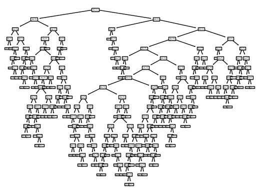
fig = plot_tree(
model,
feature_names=data.drop('Survived',axis=1).columns.tolist(),
class_names=['Died', 'Survived'],
filled=True
)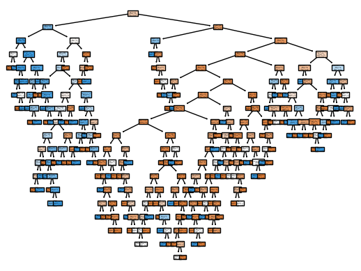
4.7 Following Nodes
https://scikit-learn.org/stable/auto_examples/tree/plot_unveil_tree_structure.html#sphx-glr-auto-examples-tree-plot-unveil-tree-structure-py
5 Tweaking DT Parameters
def train_and_run_dt(model):
model.fit(X_train,y_train)
y_pred_train = model.predict(X_train)
y_pred_test = model.predict(X_test)
accuracy_train = np.mean(y_pred_train == y_train)
accuracy_test = np.mean(y_pred_test == y_test)
print (f'Accuracy of predicting training data = {accuracy_train:.3f}')
print (f'Accuracy of predicting test data = {accuracy_test:.3f}')
print (f'Precision on test data = {precision_score(y_test, y_pred_test, average='micro'):.3f}')
print (f'Recall on test data = {recall_score(y_test, y_pred_test, average='micro'):.3f}')
print (f'Specificity on test data = {precision_score(y_test, y_pred_test, average='micro', pos_label=0):.3f}')recall_score(y_test, y_pred_test, average='micro')0.7668161434977578precision_score(y_test, y_pred_test, pos_label=0)0.8106060606060606train_and_run_dt(model = DecisionTreeClassifier())Accuracy of predicting training data = 0.984
Accuracy of predicting test data = 0.758
Precision on test data = 0.758
Recall on test data = 0.758
Specificity on test data = 0.758c:\HSMA\_HSMA 6\Sammi's Sessions\h6_4d_decision_trees_random_forests\h6_4d_decision_trees_random_forests\.venv\Lib\site-packages\sklearn\metrics\_classification.py:1561: UserWarning:
Note that pos_label (set to 0) is ignored when average != 'binary' (got 'micro'). You may use labels=[pos_label] to specify a single positive class.
5.0.1 Min Samples Leaf
train_and_run_dt(model = DecisionTreeClassifier(min_samples_leaf=5))Accuracy of predicting training data = 0.883
Accuracy of predicting test data = 0.830
Precision on test data = 0.830
Recall on test data = 0.830
Specificity on test data = 0.830c:\HSMA\_HSMA 6\Sammi's Sessions\h6_4d_decision_trees_random_forests\h6_4d_decision_trees_random_forests\.venv\Lib\site-packages\sklearn\metrics\_classification.py:1561: UserWarning:
Note that pos_label (set to 0) is ignored when average != 'binary' (got 'micro'). You may use labels=[pos_label] to specify a single positive class.
accuracy_results = []
for i in range(1, 15, 1):
model = DecisionTreeClassifier(min_samples_leaf=i, random_state=42)
model.fit(X_train,y_train)
y_pred_train = model.predict(X_train)
y_pred_test = model.predict(X_test)
accuracy_train = np.mean(y_pred_train == y_train)
accuracy_test = np.mean(y_pred_test == y_test)
accuracy_results.append({'accuracy_train': accuracy_train, 'accuracy_test': accuracy_test, 'min_samples_leaf': i})
px.line(pd.DataFrame(accuracy_results).melt(id_vars='min_samples_leaf'),
x='min_samples_leaf', y='value', color='variable')Unable to display output for mime type(s): application/vnd.plotly.v1+json5.0.1.1 Min Samples Split
train_and_run_dt(model = DecisionTreeClassifier(min_samples_split=5))Accuracy of predicting training data = 0.945
Accuracy of predicting test data = 0.767
Precision on test data = 0.767
Recall on test data = 0.767
Specificity on test data = 0.767c:\HSMA\_HSMA 6\Sammi's Sessions\h6_4d_decision_trees_random_forests\h6_4d_decision_trees_random_forests\.venv\Lib\site-packages\sklearn\metrics\_classification.py:1561: UserWarning:
Note that pos_label (set to 0) is ignored when average != 'binary' (got 'micro'). You may use labels=[pos_label] to specify a single positive class.
accuracy_results = []
for i in range(2, 15, 1):
model = DecisionTreeClassifier(min_samples_split=i)
model.fit(X_train,y_train)
y_pred_train = model.predict(X_train)
y_pred_test = model.predict(X_test)
accuracy_train = np.mean(y_pred_train == y_train)
accuracy_test = np.mean(y_pred_test == y_test)
accuracy_results.append({'accuracy_train': accuracy_train, 'accuracy_test': accuracy_test, 'min_samples_split': i})
px.line(pd.DataFrame(accuracy_results).melt(id_vars='min_samples_split'),
x='min_samples_split', y='value', color='variable')Unable to display output for mime type(s): application/vnd.plotly.v1+jsontrain_and_run_dt(model = DecisionTreeClassifier())Accuracy of predicting training data = 0.984
Accuracy of predicting test data = 0.744
Precision on test data = 0.744
Recall on test data = 0.744
Specificity on test data = 0.744c:\HSMA\_HSMA 6\Sammi's Sessions\h6_4d_decision_trees_random_forests\h6_4d_decision_trees_random_forests\.venv\Lib\site-packages\sklearn\metrics\_classification.py:1561: UserWarning:
Note that pos_label (set to 0) is ignored when average != 'binary' (got 'micro'). You may use labels=[pos_label] to specify a single positive class.
train_and_run_dt(model = DecisionTreeClassifier(max_depth=5))Accuracy of predicting training data = 0.861
Accuracy of predicting test data = 0.807
Precision on test data = 0.807
Recall on test data = 0.807
Specificity on test data = 0.807c:\HSMA\_HSMA 6\Sammi's Sessions\h6_4d_decision_trees_random_forests\h6_4d_decision_trees_random_forests\.venv\Lib\site-packages\sklearn\metrics\_classification.py:1561: UserWarning:
Note that pos_label (set to 0) is ignored when average != 'binary' (got 'micro'). You may use labels=[pos_label] to specify a single positive class.
train_and_run_dt(model = DecisionTreeClassifier(max_depth=3))Accuracy of predicting training data = 0.832
Accuracy of predicting test data = 0.803
Precision on test data = 0.803
Recall on test data = 0.803
Specificity on test data = 0.803c:\HSMA\_HSMA 6\Sammi's Sessions\h6_4d_decision_trees_random_forests\h6_4d_decision_trees_random_forests\.venv\Lib\site-packages\sklearn\metrics\_classification.py:1561: UserWarning:
Note that pos_label (set to 0) is ignored when average != 'binary' (got 'micro'). You may use labels=[pos_label] to specify a single positive class.
train_and_run_dt(model = DecisionTreeClassifier(max_depth=7))Accuracy of predicting training data = 0.891
Accuracy of predicting test data = 0.789
Precision on test data = 0.789
Recall on test data = 0.789
Specificity on test data = 0.789c:\HSMA\_HSMA 6\Sammi's Sessions\h6_4d_decision_trees_random_forests\h6_4d_decision_trees_random_forests\.venv\Lib\site-packages\sklearn\metrics\_classification.py:1561: UserWarning:
Note that pos_label (set to 0) is ignored when average != 'binary' (got 'micro'). You may use labels=[pos_label] to specify a single positive class.
accuracy_results = []
for i in range(1, 15, 1):
model = model = DecisionTreeClassifier(max_depth=i)
model.fit(X_train,y_train)
y_pred_train = model.predict(X_train)
y_pred_test = model.predict(X_test)
accuracy_train = np.mean(y_pred_train == y_train)
accuracy_test = np.mean(y_pred_test == y_test)
accuracy_results.append({'accuracy_train': accuracy_train, 'accuracy_test': accuracy_test, 'max_depth': i})
px.line(pd.DataFrame(accuracy_results).melt(id_vars='max_depth'),
x='max_depth', y='value', color='variable')Unable to display output for mime type(s): application/vnd.plotly.v1+jsonfig, ax = plt.subplots(figsize=(10,8))
model = DecisionTreeClassifier()
model = model.fit(X_train, y_train)
tree_plot = plot_tree(model,
feature_names=data.drop('Survived',axis=1).columns.tolist(),
class_names=['Died', 'Survived'],
filled=True,
ax=ax
)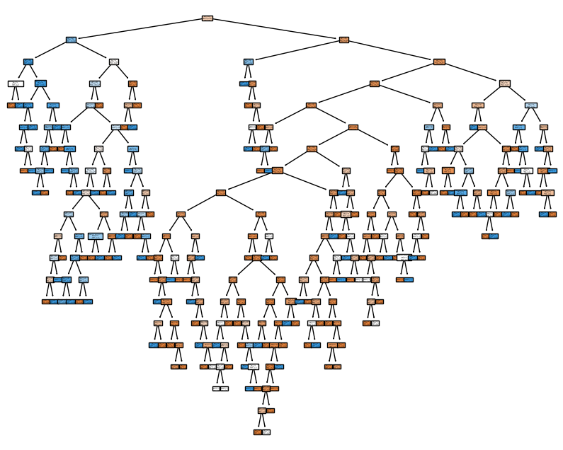
fig, ax = plt.subplots(figsize=(18,12))
model = DecisionTreeClassifier(max_depth=3)
model = model.fit(X_train, y_train)
tree_plot = plot_tree(model,
feature_names=data.drop('Survived',axis=1).columns.tolist(),
class_names=['Died', 'Survived'],
filled=True,
ax=ax,
fontsize=11
)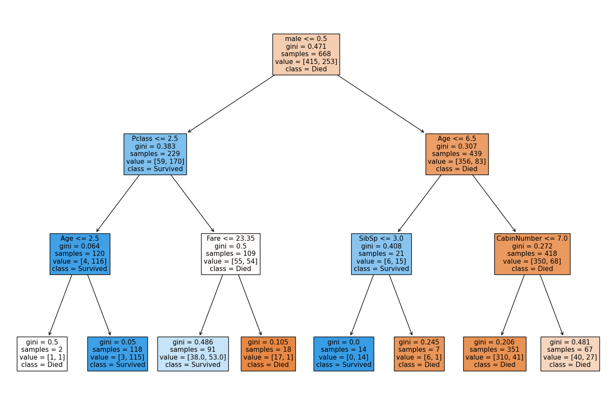
6 Compare with our log reg
from sklearn.linear_model import LogisticRegression
from sklearn.model_selection import train_test_split
from sklearn.preprocessing import StandardScalerdef standardise_data(X_train, X_test):
# Initialise a new scaling object for normalising input data
sc = StandardScaler()
# Apply the scaler to the training and test sets
train_std=sc.fit_transform(X_train)
test_std=sc.fit_transform(X_test)
return train_std, test_stdX_train_standardised, X_test_standardised = standardise_data(X_train, X_test)model = LogisticRegression()
model.fit(X_train_standardised,y_train)LogisticRegression()In a Jupyter environment, please rerun this cell to show the HTML representation or trust the notebook.
On GitHub, the HTML representation is unable to render, please try loading this page with nbviewer.org.
LogisticRegression()
# Predict training and test set labels
y_pred_train = model.predict(X_train_standardised)
y_pred_test = model.predict(X_test_standardised)# The shorthand below says to check each predicted y value against the actual
# y value in the training data. This gives a list of True and False values
# for each prediction, where True indicates the predicted value matches the
# actual value. Then we take the mean of these Boolean values, which gives
# us a proportion (where if all values were True, the proportion would be 1.0)
# If you want to see why that works, just uncomment the following line of code
# to see what y_pred_train == y_train is doing.
# print (y_pred_train == y_train)
accuracy_train = np.mean(y_pred_train == y_train)
accuracy_test = np.mean(y_pred_test == y_test)
print (f'Accuracy of predicting training data = {accuracy_train}')
print (f'Accuracy of predicting test data = {accuracy_test}')Accuracy of predicting training data = 0.8083832335329342
Accuracy of predicting test data = 0.8116591928251121Best train accuracy seen in DT: 0.823 Train accuracy seen in LR: 0.805
Best test accuracy seen in DT: 0.820 Test accuracy seen in LR: 0.798
6.1 Post pruning
https://ranvir.xyz/blog/practical-approach-to-tree-pruning-using-sklearn/
https://scikit-learn.org/stable/auto_examples/tree/plot_cost_complexity_pruning.html
import matplotlib.pyplot as pltmodel = DecisionTreeClassifier()
path = model.cost_complexity_pruning_path(X_train, y_train)
ccp_alphas, impurities = path.ccp_alphas, path.impurities
plt.figure(figsize=(10, 6))
plt.plot(ccp_alphas, impurities)
plt.xlabel("effective alpha")
plt.ylabel("total impurity of leaves")Text(0, 0.5, 'total impurity of leaves')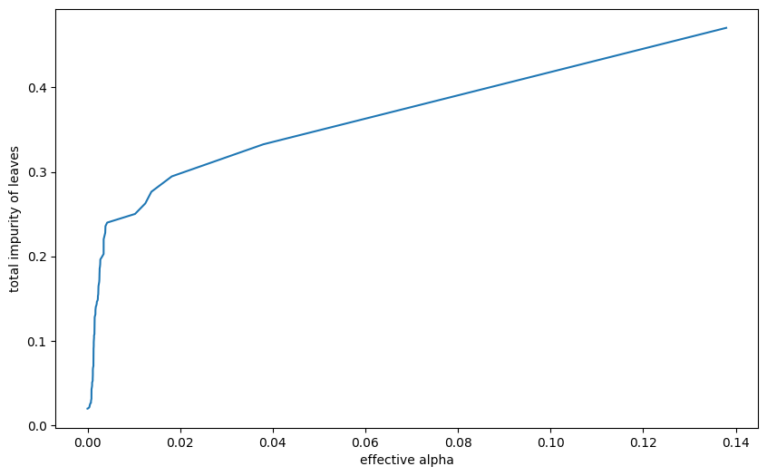
models = []
for ccp_alpha in ccp_alphas:
model = DecisionTreeClassifier(random_state=0, ccp_alpha=ccp_alpha)
model.fit(X_train, y_train)
models.append(model)tree_depths = [model.tree_.max_depth for model in models]
plt.figure(figsize=(10, 6))
plt.plot(ccp_alphas[:-1], tree_depths[:-1])
plt.xlabel("effective alpha")
plt.ylabel("total depth")Text(0, 0.5, 'total depth')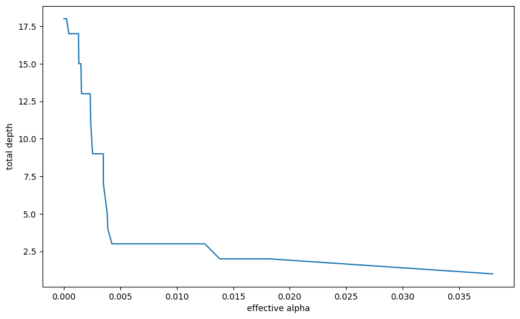
from sklearn.metrics import accuracy_score
acc_scores = [accuracy_score(y_test, model.predict(X_test)) for model in models]
tree_depths = [model.tree_.max_depth for model in models]
plt.figure(figsize=(10, 6))
plt.grid()
plt.plot(ccp_alphas[:-1], acc_scores[:-1])
plt.xlabel("effective alpha")
plt.ylabel("Accuracy scores")Text(0, 0.5, 'Accuracy scores')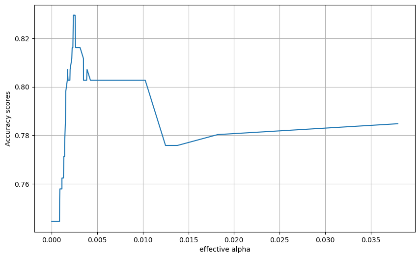
Final model from this approach
train_and_run_dt(DecisionTreeClassifier(random_state=0, ccp_alpha=0.0045))Accuracy of predicting training data = 0.832
Accuracy of predicting test data = 0.803
Precision on test data = 0.803
Recall on test data = 0.803
Specificity on test data = 0.803c:\HSMA\_HSMA 6\Sammi's Sessions\h6_4d_decision_trees_random_forests\h6_4d_decision_trees_random_forests\.venv\Lib\site-packages\sklearn\metrics\_classification.py:1561: UserWarning:
Note that pos_label (set to 0) is ignored when average != 'binary' (got 'micro'). You may use labels=[pos_label] to specify a single positive class.
6.2 Exploring metrics in our lr and dt
6.2.1 Decision Tree
decision_tree_model = model = DecisionTreeClassifier(max_depth=6)
decision_tree_model = decision_tree_model.fit(X_train,y_train)
y_pred_train_dt = decision_tree_model.predict(X_train)
y_pred_test_dt = decision_tree_model.predict(X_test)roc_curve = RocCurveDisplay.from_estimator(
decision_tree_model, X_test, y_test
)
fig = roc_curve.figure_
ax = roc_curve.ax_
ax.plot([0, 1], [0, 1], color='darkblue', linestyle='--')
np.random.seed(42)
decision_tree_model = DecisionTreeClassifier(max_depth=6)
decision_tree_model = decision_tree_model.fit(X_train,y_train)
y_pred_train_dt = decision_tree_model.predict(X_train)
y_pred_test_dt = decision_tree_model.predict(X_test)
roc_curve_dt = RocCurveDisplay.from_estimator(
decision_tree_model, X_test, y_test
)
fig = roc_curve_dt.figure_
ax = roc_curve_dt.ax_
ax.plot([0, 1], [0, 1], color='darkblue', linestyle='--')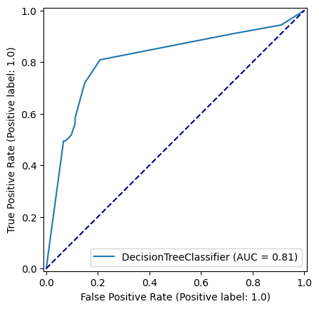
confusion_matrix_dt = ConfusionMatrixDisplay(
confusion_matrix=confusion_matrix(
y_true=y_test,
y_pred=y_pred_test_dt
),
display_labels=["Died", "Survived"]
)
confusion_matrix_dt.plot()
plt.show()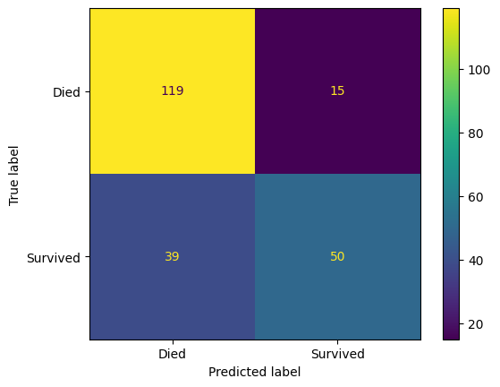
confusion_matrix_dt_normalised = ConfusionMatrixDisplay(
confusion_matrix=confusion_matrix(
y_true=y_test,
y_pred=y_pred_test_dt,
normalize='true'
),
display_labels=["Died", "Survived"]
)
confusion_matrix_dt_normalised.plot()
plt.show()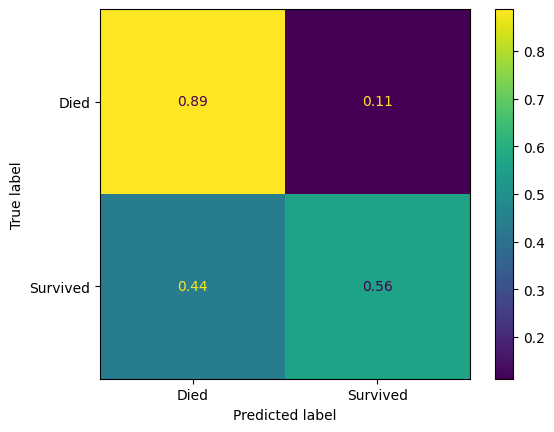
pd.DataFrame(precision_recall_fscore_support(
y_true=y_test,
y_pred=y_pred_test_dt,
average="binary"
))| 0 | |
|---|---|
| 0 | 0.769231 |
| 1 | 0.561798 |
| 2 | 0.649351 |
| 3 | NaN |
6.2.2 Logistic Regression
from sklearn.linear_model import LogisticRegression
from sklearn.preprocessing import StandardScaler
def standardise_data(X_train, X_test):
# Initialise a new scaling object for normalising input data
sc = StandardScaler()
# Apply the scaler to the training and test sets
train_std=sc.fit_transform(X_train)
test_std=sc.fit_transform(X_test)
return train_std, test_std
X_train_standardised, X_test_standardised = standardise_data(X_train, X_test)
logistic_regression_model = LogisticRegression()
logistic_regression_model = logistic_regression_model.fit(X_train_standardised,y_train)
y_pred_train_lr = logistic_regression_model.predict(X_train_standardised)
y_pred_test_lr = logistic_regression_model.predict(X_test_standardised)
accuracy_train = np.mean(y_pred_train_lr == y_train)
accuracy_test = np.mean(y_pred_test_lr == y_test)
print (f'Accuracy of predicting training data = {accuracy_train}')
print (f'Accuracy of predicting test data = {accuracy_test}')Accuracy of predicting training data = 0.8083832335329342
Accuracy of predicting test data = 0.8116591928251121roc_curve_lr = RocCurveDisplay.from_estimator(
logistic_regression_model, X_test_standardised, y_test
)
fig = roc_curve_lr.figure_
ax = roc_curve_lr.ax_
ax.plot([0, 1], [0, 1], color='darkblue', linestyle='--')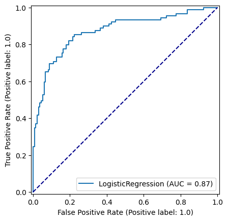
confusion_matrix_lr = ConfusionMatrixDisplay(
confusion_matrix=confusion_matrix(
y_true=y_test,
y_pred=y_pred_test_lr,
),
display_labels=["Died", "Survived"]
)
confusion_matrix_lr.plot()
plt.show()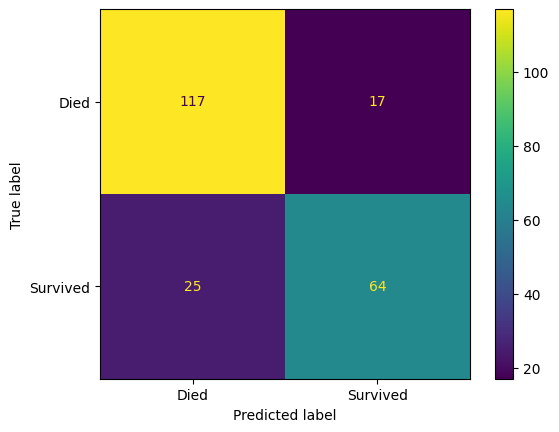
confusion_matrix_lr_normalised = ConfusionMatrixDisplay(
confusion_matrix=confusion_matrix(
y_true=y_test,
y_pred=y_pred_test_lr,
normalize='true',
),
display_labels=["Died", "Survived"]
)
confusion_matrix_lr_normalised.plot()
plt.show()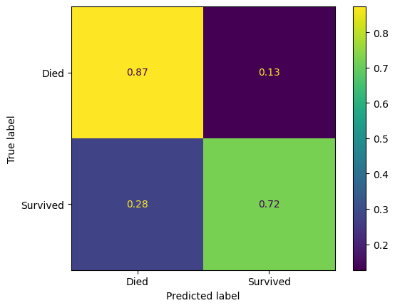
pd.DataFrame(classification_report(
y_true=y_test,
y_pred=y_pred_test_lr,
target_names=["Died", "Survived"],
output_dict=True
))| Died | Survived | accuracy | macro avg | weighted avg | |
|---|---|---|---|---|---|
| precision | 0.823944 | 0.790123 | 0.811659 | 0.807034 | 0.810446 |
| recall | 0.873134 | 0.719101 | 0.811659 | 0.796118 | 0.811659 |
| f1-score | 0.847826 | 0.752941 | 0.811659 | 0.800384 | 0.809957 |
| support | 134.000000 | 89.000000 | 0.811659 | 223.000000 | 223.000000 |
precision, recall, fbeta, support = precision_recall_fscore_support(
y_true=y_test,
y_pred=y_pred_test_lr,
average="binary"
)6.3 Compare confusion matrices
fig, (ax1, ax2) = plt.subplots(1, 2, figsize=(14, 5))
confusion_matrix_dt.plot(ax=ax1)
ax1.title.set_text('Decision Tree')
confusion_matrix_lr.plot(ax=ax2)
ax2.title.set_text('Logistic Regression')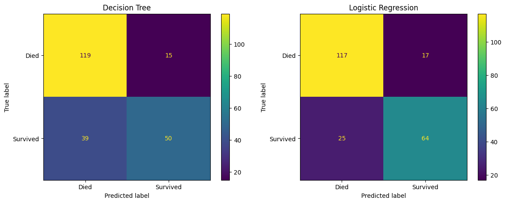
fig, (ax1, ax2) = plt.subplots(1, 2, figsize=(14, 5))
confusion_matrix_dt_normalised.plot(ax=ax1)
ax1.title.set_text('Decision Tree - Normalised')
confusion_matrix_lr_normalised.plot(ax=ax2)
ax2.title.set_text('Logistic Regression - Normalised')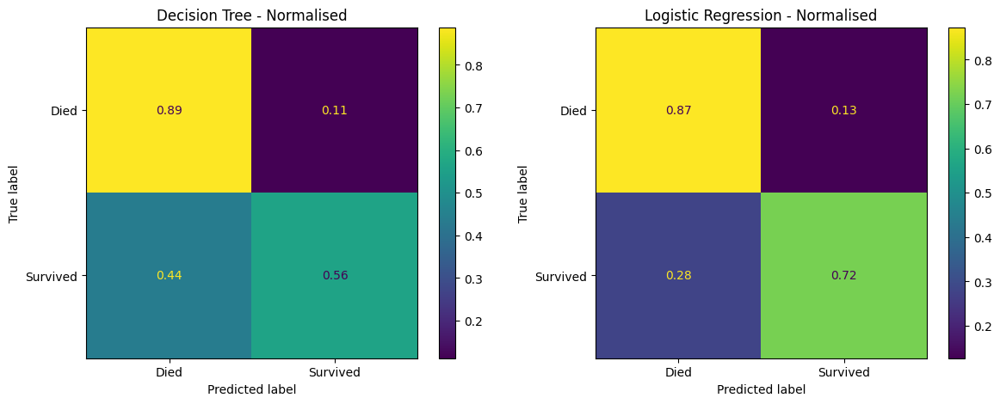
7 Compare ROC Curves
fig, (ax1, ax2) = plt.subplots(1, 2, figsize=(14, 5))
roc_curve_dt.plot(ax=ax1)
ax1.title.set_text('Decision Tree')
ax1.plot([0, 1], [0, 1], color='darkblue', linestyle='--')
roc_curve_lr.plot(ax=ax2)
ax2.title.set_text('Logistic Regression')
ax2.plot([0, 1], [0, 1], color='darkblue', linestyle='--')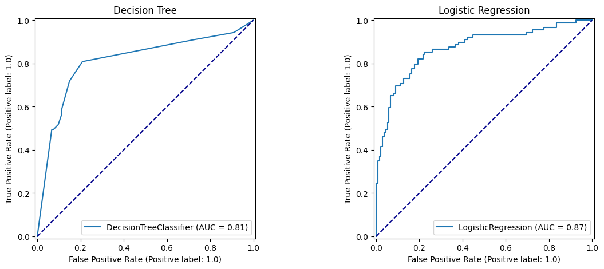